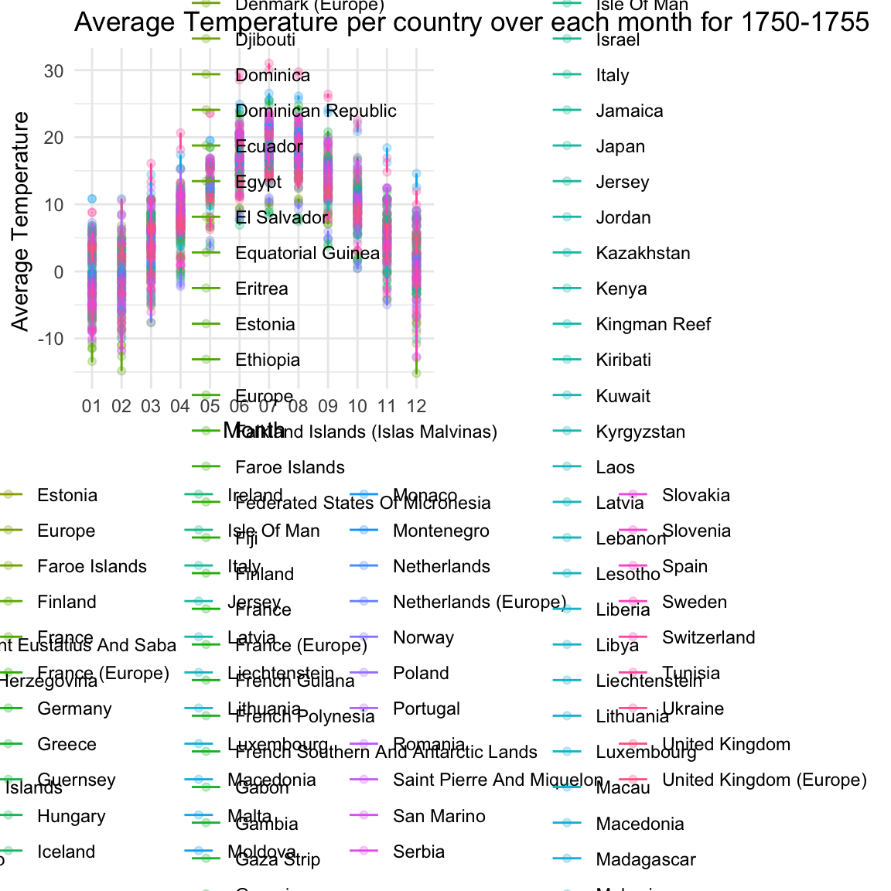

library(tidyverse)## ── Attaching packages ─────────────────────────────────── tidyverse 1.3.0 ──## ✓ ggplot2 3.3.2 ✓ purrr 0.3.4
## ✓ tibble 3.0.3 ✓ dplyr 1.0.2
## ✓ tidyr 1.1.2 ✓ stringr 1.4.0
## ✓ readr 1.3.1 ✓ forcats 0.5.0## ── Conflicts ────────────────────────────────────── tidyverse_conflicts() ──
## x dplyr::filter() masks stats::filter()
## x dplyr::lag() masks stats::lag()library(rvest)## Loading required package: xml2##
## Attaching package: 'rvest'## The following object is masked from 'package:purrr':
##
## pluck## The following object is masked from 'package:readr':
##
## guess_encodinglibrary(httr)
library(plotly)##
## Attaching package: 'plotly'## The following object is masked from 'package:httr':
##
## config## The following object is masked from 'package:ggplot2':
##
## last_plot## The following object is masked from 'package:stats':
##
## filter## The following object is masked from 'package:graphics':
##
## layoutknitr::opts_chunk$set(
fig.width = 6,
fig.height = 6,
out.width = "90%")
theme_set(theme_minimal() + theme(legend.position = "bottom"))
options(
ggplot2.continuous.colour = "viridis",
ggplot2.continuous.fill = "viridis"
)
scale_color_discrete = scale_colour_viridis_d
scale_fill_discrete = scale_fill_viridis_dlibrary(readr)
library(lubridate)##
## Attaching package: 'lubridate'## The following objects are masked from 'package:base':
##
## date, intersect, setdiff, unionlibrary(tidyr)
library(dplyr)
library(ggplot2)
library(viridis)## Loading required package: viridisLitelibrary(tidyverse)
require(gridExtra)## Loading required package: gridExtra##
## Attaching package: 'gridExtra'## The following object is masked from 'package:dplyr':
##
## combine#Import and Tidy data for Global Temperature per country:
Globalcountry_temp_df = read_csv("./Data/GlobalLandTemperaturesByCountry.csv") %>%
separate(dt, c("Year","Month", "Day")) %>%
drop_na() ## Parsed with column specification:
## cols(
## dt = col_date(format = ""),
## AverageTemperature = col_double(),
## AverageTemperatureUncertainty = col_double(),
## Country = col_character()
## )# Outbreak from 1750-1755
outbreak_df = Globalcountry_temp_df %>%
filter(Year > 1750, Year < 1755)
# No outbreak from 2000-2005
nonoutbreak_df = Globalcountry_temp_df %>%
filter(Year > 2000, Year < 2005)
#mutate year, month, day into numeric even though categorical data?outbreak_df_plot = outbreak_df %>%
ggplot(aes(x = Month, y = AverageTemperature, color = Country)) +
geom_point(alpha = 0.25) + geom_line() +
coord_cartesian() +
theme(legend.position = "bottom") +
labs(
title = "Average Temperature per country over each month for 1750-1755",
x = "Month",
y = "Average Temperature ")
outbreak_ggplotly = ggplotly(outbreak_df_plot)
nonoutbreak_plot = nonoutbreak_df %>%
ggplot(aes(x = Month, y = AverageTemperature, color = Country)) +
geom_point(alpha = 0.25) + geom_line() +
coord_cartesian() +
theme(legend.position = "bottom") +
labs(
title = "Average Temperature per country over each month for 2000-2005",
x = "Month",
y = "Average Temperature ")
nonoutbreak_ggplotly = ggplotly(nonoutbreak_plot)
grid.arrange(outbreak_df_plot, nonoutbreak_plot, ncol = 2)
##Calculate the Uncertainty of the data sets
#Outbreak_uncertainty_plot = outbreak_df %>%
#group_by(Year) %>%
#summarise(Year = first('Year'),
#avg_temp = mean(AverageTemperature, na.rm = T),
#avg_conf = mean(AverageTemperatureUncertainty, na.rm = T)) %>%
#ggplot(mapping = aes(x = Year, y = avg_temp)) +
#geom_line(color = viridis(1, begin = 0.7), mapping = aes(y = avg_conf)) +
#theme_bw()
#Nonoutbreak_uncertainty_plot = nonoutbreak_df %>%
#group_by(Year) %>%
#summarise(Year = first(Year),
#avg_temp = mean(AverageTemperature, na.rm = T),
#avg_conf = mean(AverageTemperatureUncertainty, na.rm = T)) %>%
#ggplot(mapping = aes(x = Year, y = avg_temp)) +
#geom_line(color = viridis(1, begin = 0.7), mapping = aes(y = avg_conf)) +
#theme_bw()make_seasons = function(m) {
factor((m %% 12) %/% 3, labels = c('Winter', 'Spring', 'Summer', 'Autumn'))
}
seasons1_df = outbreak_df %>%
mutate(Year = as.numeric(Year)) %>%
mutate(Month = as.numeric(Month)) %>%
mutate(Seasons = make_seasons(Month)) %>%
group_by(Month, Seasons,Year) %>%
summarise(Month = first(Month), #what happens if remove first(Month)
avg_temp = mean(AverageTemperature, na.rm = T),
avg_conf = mean(AverageTemperatureUncertainty, na.rm = T)) ## `summarise()` regrouping output by 'Month', 'Seasons' (override with `.groups` argument) outbreakseasons_plot = seasons1_df %>%
ggplot(mapping = aes(x = Year, y = avg_temp, color = Seasons)) +
geom_point() +
geom_line(mapping = aes(color = Seasons)) +
theme(legend.position = "bottom") +
scale_color_viridis(discrete = T) +
labs(
title = "Average Temperature per Seaons for 1750-1755",
x = "Year",
y = "Average Temperature ")make_seasons = function(m) {
factor((m %% 12) %/% 3, labels = c('Winter', 'Spring', 'Summer', 'Autumn'))
}
seasons2_df = nonoutbreak_df %>%
mutate(Year = as.numeric(Year)) %>%
mutate(Month = as.numeric(Month)) %>%
mutate(Seasons = make_seasons(Month)) %>%
group_by(Month, Seasons, Year) %>%
summarise(Month = first(Month), #what happens if remove first(Month)
avg_temp = mean(AverageTemperature, na.rm = T),
avg_conf = mean(AverageTemperatureUncertainty, na.rm = T)) ## `summarise()` regrouping output by 'Month', 'Seasons' (override with `.groups` argument) nonoutbreakseasons_plot = seasons2_df %>%
ggplot(mapping = aes(x = Year, y = avg_temp, color = Seasons)) +
geom_point() +
geom_line(mapping = aes(color = Seasons)) +
theme(legend.position = "bottom") +
scale_color_viridis(discrete = T) +
labs(
title = "Average Temperature per Seaons for 2000-2005",
x = "Year",
y = "Average Temperature ")Describe the data set:
access from: (http://berkeleyearth.org/archive/data/): Repackaged data from a newer compilation put together by the Berkeley Earth, which is affiliated with Lawrence Berkeley National Laboratory. The Berkeley Earth Surface Temperature Study combines 1.6 billion temperature reports from 16 pre-existing archives. The dataset includes several files:
The Globalcountry_temp_df comes from the Global Land Temperatures by Country (GlobalLandTemperaturesByCountry.csv) and contains the following:
Year: starts in 1850 for max and min land temperatures and land temperatures Month, Day, Average Temperature, temperature, country Average Temperature Uncertainty: the 95% confidence interval around the average